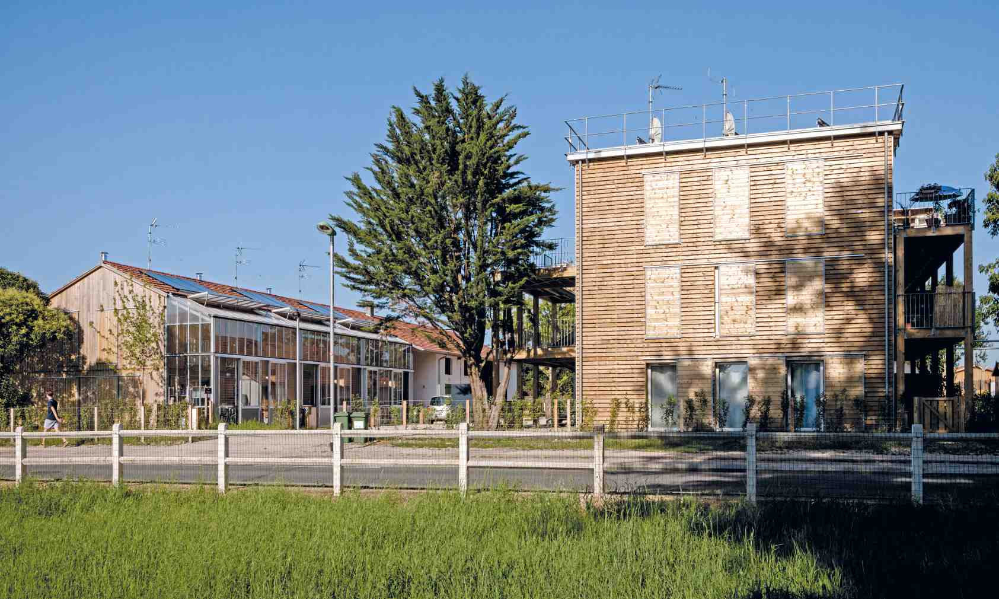

Survolez l'image et agrandissez/réduisez la vue à l'aide de la molette.
Budget: 4 536 000€ HT
Surface SHON, Surface aménagée: 3300m², 6860m²
Date début: 2008
Date fin: 2013
Maîtrise d'ouvrage: SEMI de Blanquefort
Co-traitant(s): Atelier Alexandre Chemetoff
Description:
Autour de l’ancienne ferme Labonne et de la propriété Roldan, le projet de construction de logements
et bureaux tend à recoudre et retisser des liens entre les différentes composantes urbaines d’un quartier situé à cinq minutes à pied du centre-ville de Blanquefort. Au fil des discussions engagées avec les acteurs concernés, la manière de construire et d’habiter en centre-ville évolue.
Habiter ce lieu, c’est concilier une manière d’habiter proche de tous les équipements que propose la ville et un logement confortable et performant sur le plan thermique et acoustique.
C’est pouvoir être dans l’agglomération bordelaise dans un appartement ou une maison qui propose un mode de vie proche de la nature, c’est habiter une cour de ferme, un jardin ou un immeuble terrasse. La multiplicité des situations crée une offre diversifiée de logements avec des orientations différentes, des surfaces et des typologies variées (du T2 au T6), une organisation adaptée à chaque situation (maison jumelle, duplex sous le toit, immeuble terrasse, pavillon), dans une réinterprétation de
l’architecture traditionnelle des maisons du Médoc.
{kind=link}
{kind=link}
{kind=link}
{kind=link}